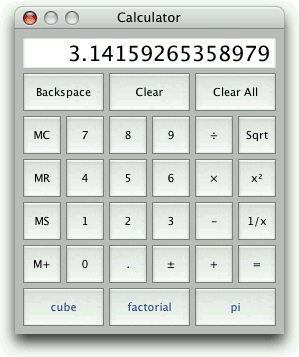

|
|
Using the QtScript module, we can write C++ applications that can execute ECMAScript. Scripts can be used to extend application functionality without requiring the application itself to be rebuilt and redeployed. We can limit the scripts to a hard-coded set of ECMAScript files that are provided as part of the application and that can be replaced with new versions independently of new releases of the application, or we can make the application able to use arbitrary ECMAScript files.
Executing a script from a C++ application typically involves the following steps:
|
1.
|
Load the script into a QString.
|
|
2.
|
|
|
3.
|
Execute the script.
|
To illustrate this, we will study the Calculator application shown in Figure 22.2. The Calculator application lets the user provide custom buttons by implementing their functionality in scripts. When the application starts up, it traverses the scripts subdirectory, looking for script files, and creates calculator buttons associated with these scripts. By default, Calculator includes the following scripts:
cube.js computes the cube of the current value (x3).
factorial.js computes the factorial of the current value (x!).
pi.js overwrites the current value with an approximation of π.

Most of the Calculator application's code is the same kind of C++/Qt code that we have seen throughout the book. Here, we will review only those parts of the code that are relevant to scripting, starting with the createCustomButtons() private function, which is called from the Calculator constructor:
void Calculator::createCustomButtons()
{
QDir scriptsDir = directoryOf("scripts");
QStringList fileNames = scriptsDir.entryList(QStringList("*.js"),
QDir::Files);
foreach (QString fileName, fileNames) {
QString text = fileName;
text.chop(3);
QToolButton *button = createButton(text,
SLOT(customButtonClicked()));
button->setStyleSheet("color: rgb(31, 63, 127)");
button->setProperty("scriptFileName",
scriptsDir.absoluteFilePath(fileName));
customButtons.append(button);
}
}
The createCustomButtons() function uses a QDir object to traverse the application's scripts subdirectory, looking for files with a .js extension. It uses the same directoryOf() function we used in Chapter 17 (p. 410).
For each .js file, we create a QToolButton by calling the private createButton() function. This function also connects the new button's clicked() signal to the customButtonClicked() slot. Then we set the button's style sheet to make the foreground text blue, to distinguish the custom buttons from the built-in buttons.
The call to QObject::setProperty() dynamically creates a new scriptFileName property for each QToolButton. We use this property in the customButtonClicked() slot to determine which script should be executed.
Finally, we add the new button to the customButtons list. The Calculator constructor uses this list to add the custom buttons to the window's grid layout.
For this application, we have chosen to traverse the scripts directory just once, at application startup. An alternative would be to use a QFileSystemWatcher to monitor the scripts directory, and update the calculator whenever the directory's content changes, allowing the user to add new scripts and remove existing scripts without having to restart the application.
void Calculator::customButtonClicked()
{
QToolButton *clickedButton = qobject_cast<QToolButton *>(sender());
QFile file(clickedButton->property("scriptFileName").toString());
if (!file.open(QIODevice::ReadOnly)) {
abortOperation();
return;
}
QTextStream in(&file);
in.setCodec("UTF-8");
QString script = in.readAll();
file.close();
QScriptEngine interpreter;
QScriptValue operand(&interpreter, display->text().toDouble());
interpreter.globalObject().setProperty("x", operand);
QScriptValue result = interpreter.evaluate(script);
if (!result.isNumber()) {
abortOperation();
return;
}
setDisplayValue(result.toNumber());
waitingForOperand = true;
}
In the customButtonClicked() slot, we first call QObject::sender() to determine which button was clicked. Then we extract the scriptFileName property to retrieve the name of the .js file associated with the button. Next, we load the file's contents into a string called script.
The ECMAScript standard requires that interpreters support Unicode, but it does not mandate any particular encoding to use for storing scripts on disk. We have chosen to assume that our .js files use UTF-8, a superset of plain ASCII.
Once we have the script in a QString, we create a QScriptEngine to execute it. A QScriptEngine instance represents an ECMAScript interpreter and holds a current state. We can have any number of QScriptEngines at the same time for different purposes, each with its own state.
Before we can run the script, we must make it possible for the script to retrieve the current value displayed by the calculator. The approach we have chosen here is to create an ECMAScript global variable called x—or, more precisely, we have added a dynamic property called x to the interpreter's global object. From script code, this property is available directly as x.
The value we set for x must be of type QScriptValue. Conceptually, a QScriptValue is similar to QVariant in that it can store many data types, except that it is tailored to store ECMAScript data types.
Finally, we run the script using QScriptEngine::evaluate(). The result is the value returned by the script, or an exception object if an error occurred. (In the next section, we will see how to report errors to the user in a message box.) A script's return value is the value explicitly returned by a return call; if return is omitted, the return value is the result of the last expression evaluated in the script. Once we have the return value, we check whether it is a number, and if it is, we display it.
For this example, we evaluate a script every time the user presses its corresponding button. Since this step involves loading and parsing the entire script, it is often preferable to use a different approach, where the script doesn't directly perform an operation, but rather returns a function or an object that can be used later on. We will use this alternative approach in the next section.
To link against the QtScript library, we must add this line to the application's .pro file:
QT += script
The example scripts are quite simple. Here's the one-line pi.js:
return 3.14159265358979323846;
Notice that we ignore the calculator's x value. The cube.js script is also a one-liner, but it does make use of the x value:
return x * x * x;
The factorial.js script defines a function and calls it:
function factorial(n)
{
if (n <= 1) {
return 1;
} else {
return n * factorial(n - 1);
}
}
return factorial(Math.floor(x));
The standard factorial function only operates on integers, so we have used the Math.floor() function to convert x to an integer.
We have now seen the fundamentals of the QtScript module: the QScriptEngine, which represents an interpreter with its current state, and QScriptValue, which stores an ECMAScript value.
In the Calculator example, there was very little interaction between the scripts and the application: The scripts take only one parameter from the application and return a single value. In the following sections, we will see more advanced integration strategies and show how to report exceptions to the user.
|
|
| Converted from CHM to HTML with chm2web Pro 2.85 (unicode) |